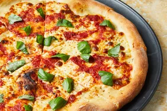

Home

Pizza
Description
Pizza on the grill is a fantastic way to make pizza at home. The heat of a hot grill is a perfect match for a professional pizza oven. Learn the tricks for making and grilling pizza from scratch with this recipe. Feel free to use your favorite toppings, but keep in mind not to overload the pizza.
Ingredients
Steps:
- Cook the meat: Cook the ground meat in a skillet until browned and crumbly. Add the onion and continue cooking until it's translucent. Stir in the canned tomato products, half of the parsley, garlic, basil, 1.5 teaspoons of salt, oregano, and sugar.
- Cook the noodles: Boil the lasagna noodles in lightly salted water until they're al dente.
- Make the cheese layer: Mix cottage cheese, Parmesan cheese, eggs, the remaining parsley, the remaining salt, and pepper in a bowl.
- Assemble the lasagna: Layer the ingredients according to the recipe (starting with sauce and ending with mozzarella) until the lasagna is assembled.
- Bake the lasagna: Cover with foil and bake in the preheated oven for about half an hour. Remove the foil and continue baking until the top is golden brown.